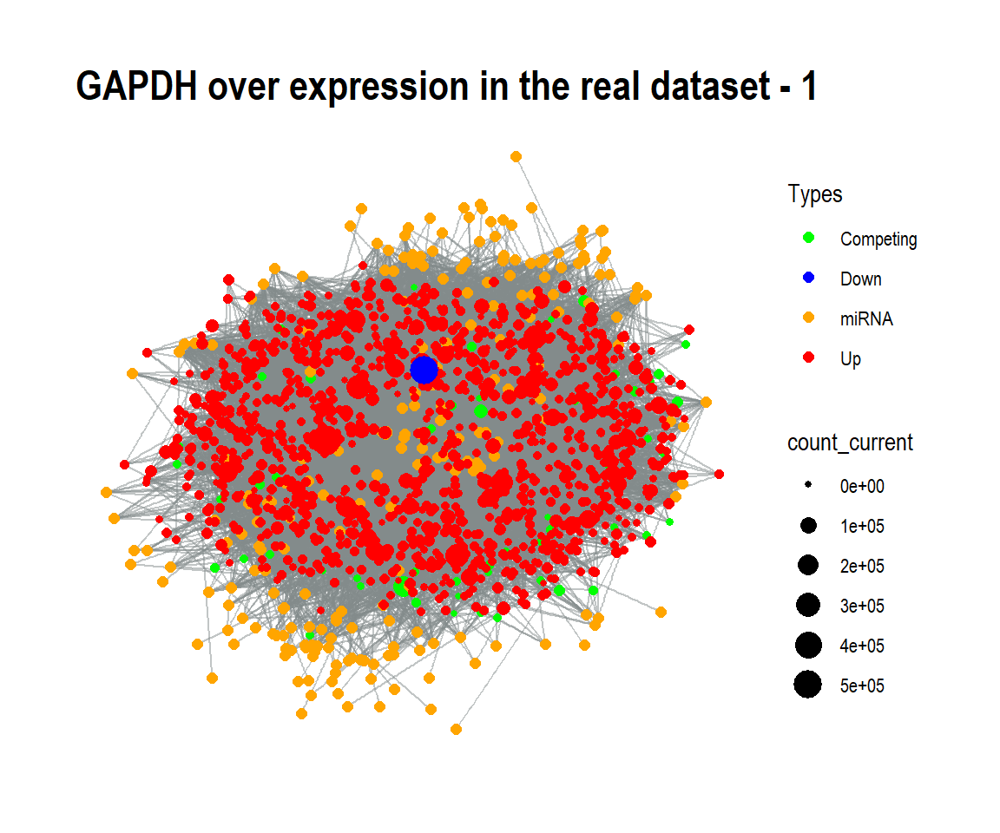

Installation of ceRNAnetsim
#install.packages("devtools")
#devtools::install_github("selcenari/ceRNAnetsim")
library(ceRNAnetsim)What is the huge_example dataset? TCGA_A7_A0CE
Interactions between miRNAs and their targets can be analysed after the integration of miRNA and targets via various datasets. As an example, we obtained the huge_example dataset. It was obtained though integration of next-generation RNA sequencing data of a cancer patient (TCGA_A7_A0CE from TCGA: breast cancer patient) and the high-throughput miRNA:target determination datasets.
data("huge_example")
head(huge_example)
#> competing miRNA competing_counts mirnaexpression_normal Energy
#> 1 TSPAN6 hsa-miR-484 5404 23.058807 -21.4
#> 2 DPM1 hsa-miR-18b-5p 2472 0.256209 -10.0
#> 3 SCYL3 hsa-miR-149-5p 1483 34.844420 -5.5
#> 4 SCYL3 hsa-miR-30a-5p 1483 63031.505507 -13.0
#> 5 C1orf112 hsa-miR-1296-5p 312 1.793463 -8.1
#> 6 CFH hsa-miR-17-5p 5760 89.929349 -17.2
#> region_effect seed_type_effect
#> 1 0.42 0.43
#> 2 0.84 0.01
#> 3 0.42 0.01
#> 4 0.84 0.43
#> 5 0.42 0.01
#> 6 0.42 0.01Select the node.
The node that starts to simulation is determined according to the point of the research.
As an example, we eliminated some nodes for making an understandable process. For this, we selected the most interacted nodes in network as followings:
huge_example%>%
group_by(competing)%>%
count()%>%
filter(n > 5)%>%
inner_join(huge_example, by = "competing")%>%
select(-n)%>%
distinct()%>%
as.data.frame()-> clear_example
head(clear_example)
#> competing miRNA competing_counts mirnaexpression_normal Energy
#> 1 A1CF hsa-miR-130a-3p 10 65.33329 -19.7
#> 2 A1CF hsa-miR-16-5p 10 296.68999 -24.2
#> 3 A1CF hsa-miR-17-5p 10 89.92935 -19.4
#> 4 A1CF hsa-miR-18a-5p 10 2.56209 -25.6
#> 5 A1CF hsa-miR-193a-3p 10 5.12418 -19.4
#> 6 A1CF hsa-miR-194-5p 10 125.02997 -16.8
#> region_effect seed_type_effect
#> 1 0.42 0.04
#> 2 0.01 0.43
#> 3 0.01 0.21
#> 4 0.84 0.25
#> 5 0.42 0.01
#> 6 0.84 0.05On the other hand, we chose also the node GAPDH according to interaction count of the nodes. With the simulation, the graph was visualized after node GAPDH was increased to five fold.
clear_example%>%
priming_graph(competing_count = competing_counts, miRNA_count = mirnaexpression_normal, aff_factor = Energy)%>%
update_nodes(once = TRUE)%>%
update_how("GAPDH", 5)%>%
update_nodes()%>%
vis_graph(title = "Disturbtion of GAPDH gene node")
The graph was visualized after the disturbtion of GAPDH gene. This disturbtion is used as trigger in the network.
clear_example%>%
priming_graph(competing_count = competing_counts, miRNA_count = mirnaexpression_normal, aff_factor = Energy)%>%
update_nodes(once = TRUE)%>%
update_how("GAPDH", 5)%>%
update_nodes()%>%
simulate_vis(title = "GAPDH over expression in the real dataset", 3)
#> # A tbl_graph: 1526 nodes and 11384 edges
#> #
#> # A directed acyclic simple graph with 1 component
#> #
#> # Node Data: 1,526 x 7 (active)
#> name type node_id initial_count count_pre count_current
#> <chr> <chr> <int> <dbl> <dbl> <dbl>
#> 1 A1CF Comp~ 1 10 10.0 10.0
#> 2 AAK1 Comp~ 2 3298 3298. 3298.
#> 3 AARS Comp~ 3 10769 10769. 10769.
#> 4 ABCA1 Comp~ 4 2522 2522. 2522.
#> 5 ABCB7 Comp~ 5 1827 1827. 1827.
#> 6 ABCC1 Comp~ 6 3344 3344. 3344.
#> # ... with 1,520 more rows, and 1 more variable: changes_variable <chr>
#> #
#> # Edge Data: 11,384 x 21
#> from to Competing_name miRNA_name competing_counts mirnaexpression~
#> <int> <int> <chr> <chr> <dbl> <dbl>
#> 1 1 1255 A1CF hsa-miR-1~ 10 65.3
#> 2 1 1256 A1CF hsa-miR-1~ 10 297.
#> 3 1 1257 A1CF hsa-miR-1~ 10 89.9
#> # ... with 1.138e+04 more rows, and 15 more variables: Energy <dbl>,
#> # dummy <dbl>, afff_factor <dbl>, degg_factor <dbl>,
#> # comp_count_list <list>, comp_count_pre <dbl>,
#> # comp_count_current <dbl>, mirna_count_list <list>,
#> # mirna_count_pre <dbl>, mirna_count_current <dbl>,
#> # mirna_count_per_dep <dbl>, effect_current <dbl>, effect_pre <dbl>,
#> # effect_list <list>, mirna_count_per_comp <dbl>
GAPDH over expression in real dataset
It was shown the conditions after the first disturbtion of GAPDH gene.
In the first graph, the responses of the other competing elements to the GAPDH disturbtions were obtained increased amount, although the decreased expression level of GAPDH was determined.
The changing regulations (up or down) were observed as a result of interactions in the second graph.
When three graphs were carefully compared to each other, it was seen that the regulations are changed continuously.